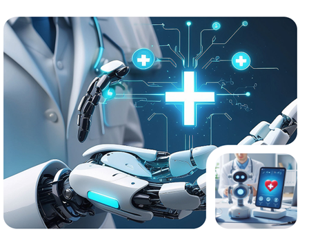

Une interface intuitive
Une interface imaginée pour s’adapter au professionnel, et non l’inverse, autour de trois principes : simplicité, protection et liberté.
NAPOLEON Médical écoute les échanges entre le médecin et le patient et transforme automatiquement la voix en une transcription structurée.
Le médecin peut ainsi se concentrer pleinement sur la personne qu'il a en face de lui.

Une interface imaginée pour s’adapter au professionnel, et non l’inverse, autour de trois principes : simplicité, protection et liberté.
L’IA transcrit la conversation et génère dossiers médicaux, comptes rendus et ordonnances.
La plateforme accorde également une attention particulière à la sécurité des données de santé, à la conformité réglementaire et à la souveraineté des données, grâce à des infrastructures dédiées au marché français.
J'ai commencé à l'utiliser presque par curiosité. Au bout de quelques semaines, je me suis rendu compte que je regardais beaucoup moins l'écran pendant la consultation. C'est devenu pour moi, avant tout, un moyen d'être plus présent auprès du patient.
Auparavant, j'essayais de prendre des notes tout au long de la consultation et je perdais inévitablement un peu le fil de la conversation. Aujourd'hui, je peux simplement écouter et laisser l'IA s'occuper de la transcription. La consultation est devenue beaucoup plus naturelle.
Ce n'est pas quelque chose auquel je prêtais particulièrement attention auparavant. Maintenant que je n'ai plus besoin d'écrire en permanence, je parviens bien mieux à maintenir le contact avec le patient. C'est l'aspect que j'apprécie le plus.
J'ai commencé à l'utiliser presque par curiosité. Au bout de quelques semaines, je me suis rendu compte que je regardais beaucoup moins l'écran pendant la consultation. C'est devenu pour moi, avant tout, un moyen d'être plus présent auprès du patient.
Auparavant, j'essayais de prendre des notes tout au long de la consultation et je perdais inévitablement un peu le fil de la conversation. Aujourd'hui, je peux simplement écouter et laisser l'IA s'occuper de la transcription. La consultation est devenue beaucoup plus naturelle.
Ce n'est pas quelque chose auquel je prêtais particulièrement attention auparavant. Maintenant que je n'ai plus besoin d'écrire en permanence, je parviens bien mieux à maintenir le contact avec le patient. C'est l'aspect que j'apprécie le plus.